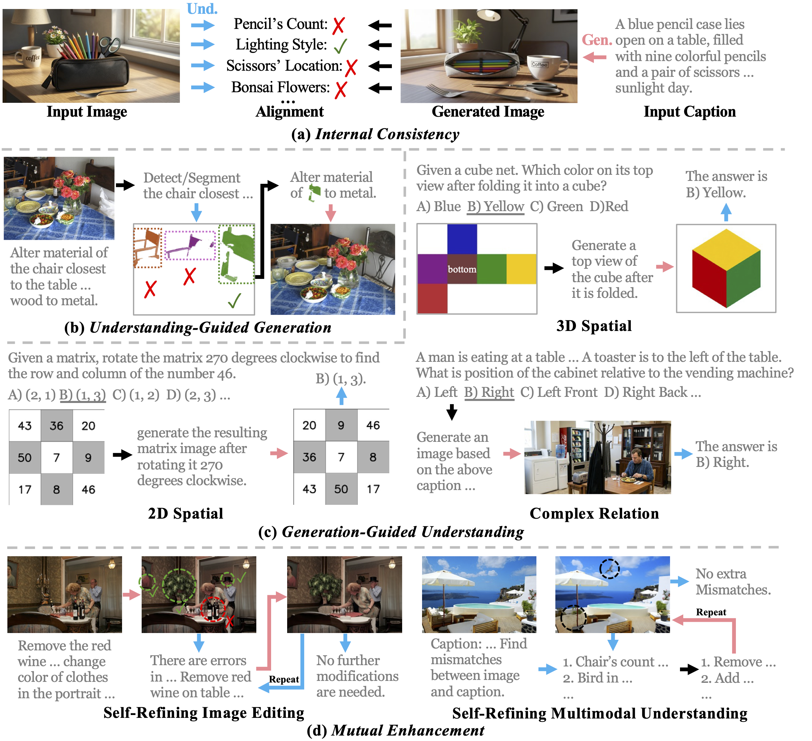
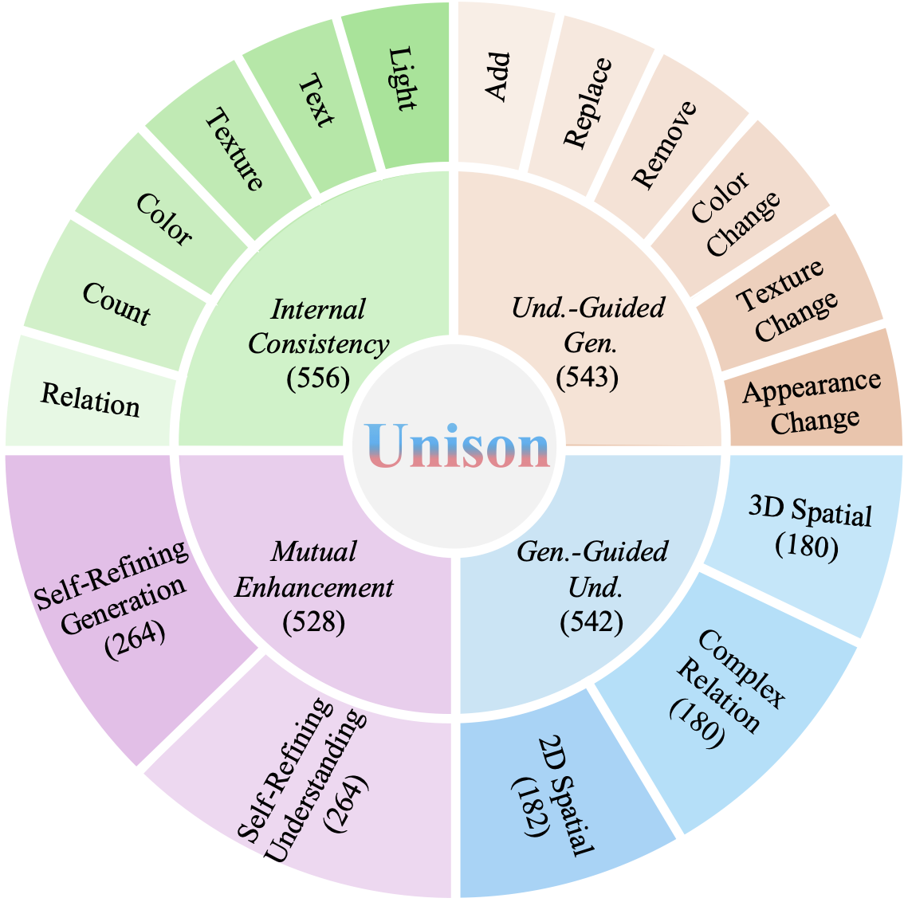
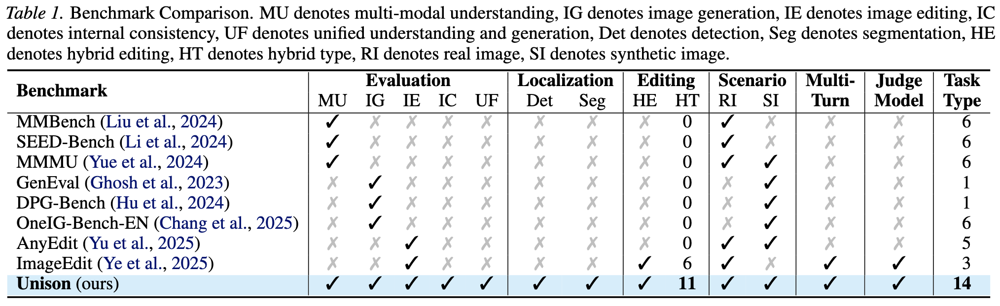

: Benchmarking Unified Multimodal Models via Synergistic Understanding and Generation
Fudan University
We introduce Unison, a comprehensive benchmark comprising 2,169 high-quality unified task samples, designed to evaluate joint understanding and generation in unified multimodal models. Unison offers three key strengths: 1) Comprehensive Dimensions: Unison encompasses internal consistency, understanding-guided generation, generation-guided understanding, and mutual enhancement to enable holistic evaluation. 2) Diagnostic Evaluation: it provides both unified and decoupled tracks for understanding and generation, allowing fine-grained attribution of failure modes and quantitative analysis of the gains from unified modeling. 3) Human Alignment: we also train Unison-Judge, an evaluation model well aligned with human judgments to achieve reliable assessment. Based on systematic evaluations of state-of-the-art models on Unison, we uncover critical limitations in current unified multimodal systems and highlight promising directions for future research.



Scores across the four dimensions, each split into Und. (understanding), Gen. (generation) and Uni. (unified) tracks. Bold = best, underline = second best within open-source models.
| Model | Params | Internal Consistency | Und.-Guided Gen. | Gen-Guided Und. | Mutual Enhancement | Overall | ||||||||
|---|---|---|---|---|---|---|---|---|---|---|---|---|---|---|
| Und. | Gen. | Uni. | Und. | Gen. | Uni. | Und. | Gen. | Uni. | Und. | Gen. | Uni. | |||
| Show-o | 1.3B | 88.3 | 64.7 | 58.5 | 8.90 | – | – | 12.0 | – | – | – | – | – | – |
| Janus-Pro | 1.5B | 94.4 | 47.1 | 45.0 | 0.3 | – | – | 19.2 | – | – | – | – | – | – |
| Show-o2 | 1.5B | 96.0 | 67.9 | 65.8 | 26.7 | – | – | 9.4 | – | – | – | – | – | – |
| D-DiT | 2B | 86.5 | 65.0 | 58.1 | 0.2 | – | – | 6.8 | – | – | – | – | – | – |
| ILLUME+ | 3B | 43.4 | 19.9 | 10.5 | 10.3 | 7.7 | 9.0 | 11.3 | 30.1 | 15.1 | 1.0 | 5.5 | 3.2 | 9.4 |
| Janus-Pro | 7B | 95.7 | 71.7 | 69.8 | 3.2 | – | – | 15.1 | – | – | – | – | – | – |
| Show-o2 | 7B | 97.2 | 73.8 | 72.5 | 9.9 | – | – | 9.2 | – | – | – | – | – | – |
| ILLUME+ | 7B | 80.2 | 20.4 | 16.7 | 12.4 | 10.4 | 11.4 | 11.3 | 27.7 | 13.9 | 2.7 | 6.8 | 4.8 | 11.7 |
| 🥈OmniGen2 | 7B | 92.3 | 79.0 | 74.5 | 61.3 | 42.6 | 52.0 | 19.7 | 41.9 | 30.9 | 45.0 | 50.3 | 47.7 | 51.3 |
| TokenFlow | 14B | 93.0 | 47.1 | 44.5 | 20.1 | – | – | 17.0 | – | – | – | – | – | – |
| 🥇BAGEL | 14B | 96.0 | 82.5 | 80.3 | 57.6 | 78.1 | 67.9 | 28.2 | 41.6 | 32.0 | 7.2 | 57.7 | 32.5 | 53.2 |
| SEED-X | 17B | 82.8 | 38.9 | 34.2 | 18.6 | 13.7 | 16.1 | 13.5 | 27.4 | 20.8 | 0.2 | 16.8 | 8.5 | 19.9 |
| 🥉UniWorld-V1 | 19B | 92.6 | 68.5 | 65.1 | 63.4 | 26.4 | 44.9 | 22.8 | 32.0 | 26.9 | 46.4 | 16.2 | 31.3 | 42.1 |
| Model | Params | Internal Consistency | Und.-Guided Gen. | Gen-Guided Und. | Mutual Enhancement | Overall | ||||||||
|---|---|---|---|---|---|---|---|---|---|---|---|---|---|---|
| Und. | Gen. | Uni. | Und. | Gen. | Uni. | Und. | Gen. | Uni. | Und. | Gen. | Uni. | |||
| Gemini 3 Pro | – | 98.3 | 88.1 | 86.9 | 71.0 | 82.8 | 76.9 | 42.2 | 46.5 | 43.9 | 65.3 | 77.4 | 71.4 | 69.8 |
| GPT-5.2 | – | 98.6 | 86.3 | 84.7 | 69.7 | 85.7 | 77.7 | 44.8 | 58.2 | 52.7 | 69.1 | 71.2 | 70.2 | 71.3 |
Higher is better. Dashes mark tracks a model does not support. Closed-source bold marks the higher of the two systems.
If you find this work useful, please consider citing:
@inproceedings{liu2026unison,
title = {Unison: Benchmarking Unified Multimodal Models via
Synergistic Understanding and Generation},
author = {Liu, Jinyu and Shuai, Xincheng and Ding, Henghui and Jiang, Yu-Gang},
booktitle = {International Conference on Machine Learning (ICML)},
year = {2026}
}